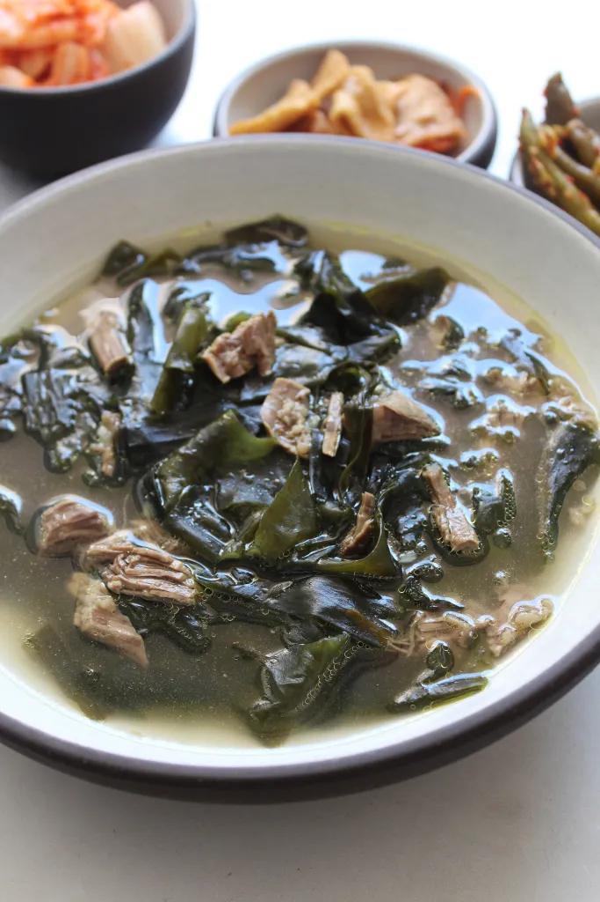

Miyeokguk

Description
A traditional Korean soup dish eaten on birth days and in the few weeks after a mother gives birth. The origin of the dish can be traced back to ancient times, when Koreans noticed whales would eat seaweed after giving birth to their calves. Inspired by this and presuming the health benefits as the reason for the whales postpartum consumption, Koreans implemented this seaweed into a soup and Miyeokguk has been a staple in Korean diets ever since.
Ingredients
- ½ ounce (16 grams) dried miyeok, soaked in cold water for 30 minutes
- 1 pound beef brisket or skirt steak, cut into thin and small pieces
- 4 garlic cloves, minced
- 1 tablespoon plus 2 teaspoons fish sauce (or salt and soy sauce to your taste)
- 2 teaspoon toasted toasted sesame oil
Steps
- Rinse and drain the miyeok. Squeeze out excess water. Cut a few times into bite-size pieces.
- Transfer the miyeok to a large and heavy pot. Add 8 cups of water. Cover and bring it to a boil for about 10 to 12 minutes.
- Turn down the heat to medium. Add the beef, cover, and cook for 40 minutes.
- Stir in garlic and fish sauce. Cook another 10 minutes, or until the beef is tender and the broth is savory.
- Stir-in the sesame oil. Ladle into bowls and serve. The soup can be refrigerated in an airtight container for up to 4 days.